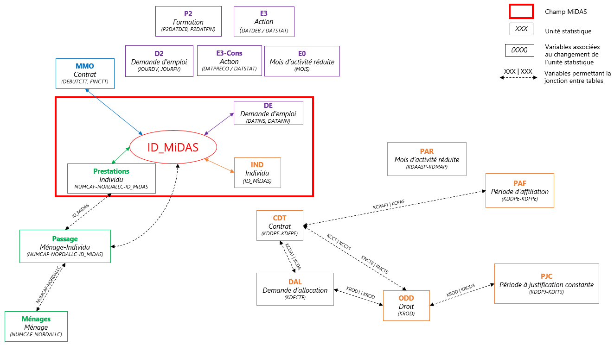
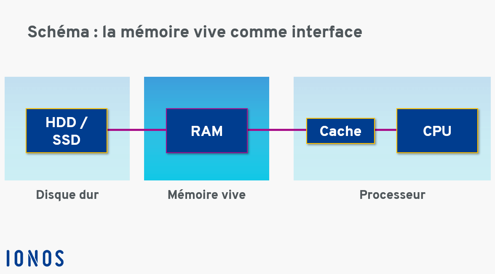
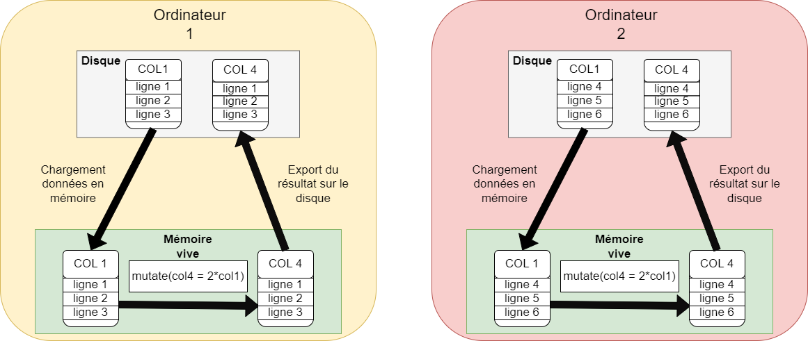
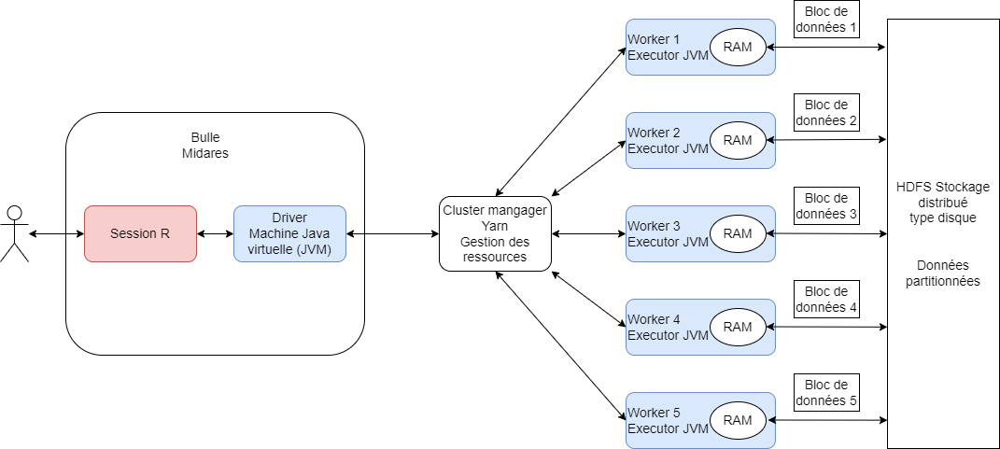
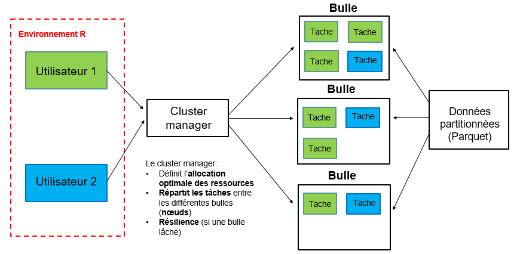
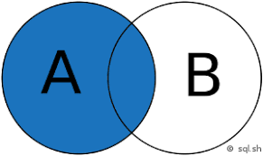

val TopHorrorsIGN2022 = Seq(
(9, "Pearl"),
(6, "The Sadness"),
(6, "Offseason"),
(7, "Hatching"),
(8, "x")
).toDF("IMDB Rating", "IGN Movie Picks")
val TopHorrorsTheAVClub2022 = Seq(
(7, "Nope"),
(9, "Pearl"),
(8, "x"),
(5, "Barbarian"),
(5, "Bones And All")
).toDF("IMDB Rating", "AVC Movie Picks")
import org.apache.spark.sql.functions.col
val cols = List(col("IGN Movie Picks"), col("AVC Movie Picks"))
val query = TopHorrorsIGN2022(
"IGN Movie Picks"
) === TopHorrorsTheAVClub2022("AVC Movie Picks")
val outerJoin = TopHorrorsIGN2022
.join(TopHorrorsTheAVClub2022, query, "outer")
.select(cols: _*)
outerJoin.show()Initiation à Spark avec R en mode cluster
Au programme
MiDAS : une base de donn√©es volumineuse üíæ
Manipuler un appariement : une op√©ration co√ªteuse üí≤
Initiation au calcul distribu√© : quelles ressources r√©server ? üñ•Ô∏èüñ•Ô∏èüñ•Ô∏è
Sparklyr : la solution ergonomique de spark sous R ü뮂Äçüíª
Pour aller plus loin ⏩
MiDAS : une base de données volumineuse
MiDAS croise trois bases de données administratives exhaustives :
les données sur l’inscription et l’indemnisation des demandeurs d’emploi de France Travail : le Fichier Historique Statistique (FHS) et le Fichier National des Allocataires (FNA) ;
les données sur les bénéficiaires de minima sociaux (RSA, PPA, AAH) et les caractéristiques des ménages de la CNAF : Allstat-FR6 ;
les données sur les contrats salariés de la DSN : MMO de la Dares.
MiDAS : une base de données volumineuse
Chaque vague de MiDAS correspond à environ 600 Go de données au format sas. Les vagues fonctionnent par empilement :
le gain de profondeur temporelle et l’entrée dans le champ de nouvelles personnes
les vagues sont appariables entre elles
MiDAS : une base de données volumineuse
MiDAS est l’une des bases de données les plus volumineuses du SSP :
Les administrations dont les données sont comparables à MiDAS utilisent un cluster Spark : Insee, Drees, Acoss…
▶️Le cluster spark est la solution la plus efficiente pour traiter des données de cette ampleur. Apprendre à l’utiliser pourra vous être utile dans d’autres contextes que celui de la Dares.
Structure de l’appariement

Pourquoi Spark ?
La manipulation des données MiDAS en l’état implique de nombreuses opérations de jointures qui nécessitent une puissance de calcul et un temps certains.
Le format parquet
Les données sont converties au format parquet dès leur réception et mises à disposition sur la bulle CASD du projet MiDares sous l’espace commun. Le format parquet est un format de données adapté aux données volumineuses :
il compresse efficacement les données : taux de compression de 5 à 10 par rapport au format csv
il est orienté colonnes
il permet le chargement efficace en mémoire des données
Il permet le stockage partitionné des données
il permet un traitement de cette partition qui conserve les données non nécessaires sur disque
Il est indépendant du logiciel utilisé : il peut donc être traité par spark et par R.
Manipuler un appariement : une opération coûteuse
L’espace MiDares
Des ressources partagées entre tous les utilsateurs simultanés :
- 512 Go de mémoire vive (ou RAM) : passage à 256 Go
La mémoire vive
La mémoire vive, aussi appelée RAM, se distingue de la mémoire de stockage (disque) par sa rapidité, notamment pour fournir des données au processeur pour effectuer des calculs, par sa volatilité (toutes les données sont perdues si l’ordinateur n’est plus alimenté) et par l’accès direct aux informations qui y sont stockées, quasi instantanné.
- Un processeur (ou CPU) composé de 32 coeurs : passage à 16 coeurs
Le processeur
Le processeur permet d’exécuter des tâches et des programmes : convertir un fichier, exécuter un logiciel… Il est composé d’un ou de plusieurs coeurs : un coeur ne peut exécuter qu’une seule tâche à la fois. Si le processeur contient plusieurs coeurs, il peut exécuter autant de tâches en parallèle qu’il a de coeurs. Un processeur se caractérise aussi par sa fréquence : elle est globalement proportionnelle au nombre d’opérations qu’il est capable d’effetuer par seconde.

Programmer en mémoire vive
R : la mémoire vive, état dans l’environnement
SAS : lecture/écriture sur le disque
MiDAS au format sas >> taille de la mémoire vive disponible du serveur CASD –> format
.parquetImpossible de charger tout MiDAS en mémoire vive
Des solutions existent pour manipuler les données sous R sans les charger entièrement en mémoire vive :
arrow(avec des requêtesdplyr)duckDB: recommandé par le SSPLab pour des données jusqu’à 100Go▶️ Insuffisantes pour les traitements les plus coûteux sur MiDAS en R : la partie de la mémoire vive utilisée pour stocker les données correspond à autant de puissance de calcul indisponible pour les traitements.
Les traitements coûteux en puissance de calcul
les jointures
les opérations en
group_by()distinct()▶️ Exécution séquentielle sur un coeur du processeur + beaucoup de mémoire vive (données temporaires)
▶️ Erreur “out of memory”.
Un traitement peu coûteux : un traitement MAP

Ce traitement est peu coûteux :
chargement d’une seule colonne en RAM : format parquet orienté colonnes
peu de mémoire d’exécution : R est un langage vectorisé
Un traitement coûteux : un traitement REDUCE

Ce traitement nécessite :
le chargement de davantage de colonnes en mémoire vive ;
davantage de mémoire d’exécution pour effectuer l’intersection (
inner_join()).
Initiation au calcul distribué
Calcul distribué et calcul parallèle
Calcul non distribué
Les problématiques Big Data en R sont les suivantes :
la taille des données : chargées en mémoire pour effectuer les calculs avec R
le temps de calcul : les étapes du traitement sont effectuées de manière séquentielle par le processeur (très long)
l’optimisation du programme
Calcul distribué spark
Le calcul distribué avec spark apporte une solution à ces problématiques :
chargement des données en mémoire parcimonieux et non systématique
exécution de tâches en parallèle sur plusieurs coeurs du processeur, voire sur plusieurs ordinateurs différents
optimisation automatique du code
Un traitement MAP distribué

Si les données sont stockées sur différents ordinateurs :
les calculs peuvent être effectués en parallèle ;
gain de temps lié à l’augmentation des ressources informatiques pour effectuer le calcul et à la parallélisation.
Les traitements MAP se prêtent parfaitement au calcul distribué et parallèle.
Un traitement REDUCE distribué

Si les données sont stockées sur différents ordinateurs :
il faut les rappatrier au même endroit pour effectuer la jointure ;
cet échange est effectué en réseau entre les ordinateurs : l’envoi réseau a un coût non négligeable en temps.
Les traitements REDUCE ne se prêtent pas bien au calcul distribué et parallèle.
Spark
Apache Spark : librairie open source développée dans le langage
scalaScala : langage compilé, rapide et distribuable qui peut être exécuté dans une machine virtuelle Java
scalaadapté pour maîtriser toutes les fonctionnalités desparket optimiser au maximum les traitements ensparksparkest compatible avec les langagesscala,R,python,java, et peut interpréter des commandes SQL.Deux packages existent sous R :
sparkR proposé par Apache Spark
sparklyr, qui permet d’utiliser directement des commandes dplyr traduites en spark par le package.
Installation de spark sous CASD
Voir la fiche dédiée sur le site
La machine virtuelle Java
Spark est rédigé en scala, un langage qui a besoin d’une machine virtuelle Java pour être exécuté. La machine virtuelle Java est scalable : l’utilisateur peut choisir quelles ressources physiques elle a le droit d’utiliser sur l’ensemble des ressources physiques disponibles sur l’ordinateur. C’est un mini ordinateur créé par spark à l’intérieur de notre propre ordinateur, qui utilise les ressources de ce dernier.
Machine virtuelle
Une machine virtuelle a les mêmes caractéristiques qu’un ordinateur :
un système d’exploitation : Windows, Linux, MacOS
des ressources physiques : CPU, RAM et stockage disque
La différence avec un ordinateur : une machine virtuelle peut être créée sur un serveur physique en réservant une petite partie des ressources du serveur seulement, ce qui permet de créer plusieurs ordinateurs différents sur une seule infractructure physique
Deux manières d’utiliser Spark
Avec un seul ordinateur
Ce mode est appelé Spark local.
une unique machine virtuelle Java est créée pour exécuter le code spark
tâches parallélisées sur les différents coeurs (CPU) du processeur de la machine virtuelle Java
l’ordinateur sur lequel est créée cette machine virtuelle Java est la bulle MiDARES, équivalent d’un unique gros ordinateur
Sur un cluster de calcul
Un cluster de calcul est un ensemble d’ordinateurs ou machines virtuelles connectés en réseau.
une machine virtuelle Java est créée par spark dans chaque ordinateur du cluster
tâches parallélisées sur les différents ordinateurs du cluster
la session R reste sur la bulle MiDARES, le code R est traduit en scala puis envoyé sur le cluster pour être exécuté.
Mode local : schéma
Mode local : à éviter
En mode local :
les ressources utilisées par la machine virtuelle sont celles de la bulle
il faut allouer suffisamment de coeurs à la JVM pour paralléliser
même si l’utilisateur choisit des ressources faibles, les ressources réelles utilisées dans une session spark peuvent être plus élevées : mauvaise gestion de l’allocation des ressources
accélération sensible par rapport à un mode de programmation classique séquentiel sur un unique coeur si beaucoup de ressources
Sur la bulle CASD, mauvaise gestion de la répartition des ressources en spark local : l’utilisation simultanée de spark par plusieurs membres de la bulle entraînent des ralentissements considérables
▶️mode local à éviter absolument
Le cluster de calcul Midares : présentation

Se connecter à Spark sur un cluster
Se connecter à spark revient à demander à spark de créer toutes les JVM demandées capables de lire du scala.
Pour se connecter à spark depuis R avec le package sparklyr :
Le paramètre spark.executor.instances correspond au nombre d’ordinateurs sur lequel on souhaite paralléliser le travail d’exécution de code. Ici, l’utilisateur demande 5 ordinateurs du cluster.
Nous verrons plus loin quels paramètres nous devons préciser dans le fichier de configuration.
Une connexion
Toutes les JVM demandées (5) sont instanciées dans les ordinateurs du cluster, avec les paramètres définis.
La vie d’un programme rédigé en sparklyr
Avec sparklyr, il est possible de programmer directement en dplyr pour utiliser spark.
# un data frame que j'envoie dans spark
un_df <- data.frame(c(1,2,3), c("A", "B", "C"))
names(un_df) <- c("col_num", "col_char")
# C'est maintenant un spark_data_frame
copy_to(sc, un_df)
un_df_transforme <- un_df %>%
mutate(une_nouvelle_col = col_num*2)Si j’exécute ce programme, je ne pourrai pas ouvrir un_df_transforme, d’ailleurs, il ne se sera rien passé.
La lazy evaluation
Spark distingue deux types d’opérations :
les transformations : ce sont des opérations qui prennent en entrée un
spark_data_frameet retournent unspark_data_frame, elles ne déclenchent aucun calcul lorsqu’elles sont appelées.Par exemple, le programme ci-dessous est compilé instantanément et ne déclenche pas d’exécution :
une_transformation <- un_spark_data_frame %>% group_by(identifiant) %>% mutate(une_somme = sum(revenus))les actions : ce sont des opérations qui demandent le calcul d’un résultat et qui déclenchent le calcul et l’exécution de toutes les transformations compilées jusqu’à l’appel de l’action.
Par exemple, le programme ci-dessous déclenche le calcul de la cellule
une_transformationet de la moyenne des revenus :revenu_moyen <- une_transformation %>% summarise(revenu_moyen = mean(une_somme)) %>% print()Les principales actions sont :
print(),collect(),head(),tbl_cache()(écrire unspark_data_frameen mémoire pour le réutiliser).
La vie d’un programme rédigé en sparklyr
Prenons l’exemple d’un programme contenant une action.
Le rôle du driver
Le programme R est traduit en scala grâce au package
sparklyrLe driver évalue le programme, il lit le code
scalamais n’exécute rien du toutS’il remarque une erreur, l’erreur est envoyée directement à l’utilisateur en session R avant l’exécution du programme : c’est la force de la lazy evaluation.
Le plan d’exécution
source : documentation CASD disponible à Documentation Data Science
AJOUTER UN DAG
Le rôle du driver : Catalyst
Le driver contient un programme nommé Catalyst qui optimise le code scala automatiquement.
Spark optimise automatiquement les programmes soumis :
Compilation des transformations pour soulever les éventuelles erreurs
Intégration dans un plan d’exécution contenant les étapes nécessaires pour parvenir au résultat demandé par le programme
Optimisation du plan logique par le module Catalyst (driver Spark)
Par exemple si j’écris le programme :
non_optimal <- table_1 %>%
mutate(duree_contrat = DATEDIFF(fin_contrat, debut_contrat)) %>%
filter(debut_contrat >= as.Date("2023-01-01"))Catalyst réécrit :optimal <- table_1 %>%
filter(debut_contrat >= as.Date("2023-01-01")) %>%
mutate(duree_contrat = DATEDIFF(fin_contrat, debut_contrat))Cette optimisation est réalisée sur toutes les transformations compilée avant qu’une action déclenche l’exécution.
Le rôle du driver : Catalyst

Le rôle du driver : Catalyst
Réalisation de plans physiques possibles et sélection du meilleur plan physique (au regard de la localisation des données requises). Le plan physique est la distribution des différents calculs aux machines du cluster.
Déclencher le moins d’actions possibles dans son programme permet de tirer pleinement parti de Catalyst et de gagner un temps certain.
Pour profiter des avantages de spark, la manière de programmer recommandée est différente de celle prédominante en R classique.
Le rôle du cluster manager
Le cluster manager distribue les traitements physiques aux ordinateurs du cluster :
il connaît le meilleur plan physique fourni par Catalyst ;
il connaît les ressources disponibles et occupées par toutes les machines du cluster ;
il affecte les ressources disponibles à la session spark.
Le rôle du worker
Le worker effectue le morceau de programme qu’on lui affecte et renvoie le résultat au driver, qui lui-même affiche le résultat en session R :
il ne connaît que les tâches qu’on lui a affectées ;
il peut communiquer avec le driver en réseau pour renvoyer un résultat ;
il peut communiquer avec les autres workers en réseau pour partager des données ou des résultats intermédiaires : c’est un shuffle.
Où sont les données ?
Où sont les données ?

Transfert de la bulle à HDFS
Transfert de HDFS à la bulle
Mais où sont réellement les données ? HDFS
Hadoop Distributed File System (HDFS)
stockage sur différentes machines : ici les noeuds du cluster spark, c’est-à-dire les différents ordinateurs workers du cluster
données divisées en blocs plus petits de taille fixe et répartis sur les machines : aucune table de MiDAS n’existe en entier sur le cluster
chaque bloc est répliqué trois fois : il existe trois fois les 10 premières lignes de la table FNA sur trois ordinateurs différents du cluster (résilience)
un NameNode supervise les métadonnées et gère la structure du système de fichiers
les DataNodes stockent effectivement les blocs de données : les datanodes sont en fait les disques des workers du cluster, chaque ordinateur du cluster dispose d’un disque avec une partie des données MiDAS
le système HDFS est relié à la bulle Midares : possible de charger des données en clique-bouton de la bulle vers HDFS de manière très rapide et de télécharger des tables de HDFS pour les récupérer en local
Programmer avec sparklyr
Paramétrer sa session
Il faut préciser quelles ressources réserver pour chaque unité spark : le driver, le nombre d’ordinateurs workers (appelées instances), la RAM, le nombre de coeurs
La configuration par défaut est :
Il est nécessaire de configurer la session spark pour établir une connexion entre la session R et un cluster spark. Les paramètres à définir sont :
Les ressources physiques utilisées :
par le driver : avec
spark.driver.memory(avec parcimonie)par chaque worker avec
spark.executor.memory(valeur max 140 Go) etspark.executor.cores(valeur max 8 coeurs)le nombre de workers avec
spark.executor.instances(2 ou 3 suffisent)La file sur laquelle on travaille avec
spark.yarn.queue(prod ou dev)
le nombre de partitions de chaque
spark_data_frameavecspark.sql.shuffle.partitions(200 par défaut)la limite de taille des résulats qui peuvent être collectés par le driver avec
spark.driver.maxResultSize(0 est la meilleure option)
conf <- spark_config()
conf["spark.driver.memory"] <- "40Go"
conf["spark.executor.memory"] <- "60Go"
conf["spark.executor.cores"] <- 4
conf["spark.executor.instances"] <- 2
cont["spark.yarn.queue"] <- "prod"
conf["spark.driver.maxResultSize"] <- 0
conf["spark.sql.shuffle.partitions"] <- 200
sc <- spark_connect(master = "yarn", config = conf)Mode cluster : non concurrence grâce au cluster manager

Le mode cluster permet une réelle distribution sur différents noeuds, qui sont en fait des ordinateurs distincts d’un serveur. Ces machines communiquent en réseau.
Capture d’écran réservation des ressources
Il est donc nécessaire de se déconnecter pour libérer les ressources : des ressources réservées, même lorsqu’aucun programme ne tourne, ne peuvent jamais être affectées à d’autres utilisateurs.
Importer les données depuis HDFS sous R
Les données doivent être disponibles dans les workers sous forme de spark_data_frame :
caché en mémoire directement : si utilisées de très nombreuses fois pour gagner du temps
laissé sur disque tant qu’aucune action ne déclenche un traitement qui nécessite son chargement en mémoire
▶️ chargement en mémoire vive couteux en temps : avec la configuration présentée, le chargement du FNA, du FHS et des MMO prend au moins 25 minutes.
Pour passer un
data.frameR en spark_data_frame :copy_to()
pjc_df_spark <- spark_read_parquet(sc,
path = "hdfs:///dataset/MiDAS_v4/FNA/pjc.parquet",
memory = TRUE)
pjc_filtree <- pjc_df_spark %>%
filter(KDDPJ >= as.Date("2022-01-01"))
spark_write_parquet(pjc_filtree, "hdfs:///tmp/pjc_filtree.parquet")
pjc_df_spark <- copy_to(sc, "PJC")Les exports sur HDFS
Les exports sur HDFS
Lorsqu’on exporte une table depuis notre session R vers HDFS, celle-ci est automatiquement partitionnée, comme le reste des données.
Ainsi, cette table sera stockée en plusieurs morceaux sous HDFS et répliquée.
Il est possible de maîtriser le nombre de partitions avec la commande sdf_coalesce(partitions = 5) du package sparklyr.
L’idéal est d’adapter le nombre de partitions à la taille d’un bloc : un bloc mesure 128 MB. Lorsqu’un bloc disque est utilisé, même à 1%, il n’est pas utilisable pour un autre stockage.
Exporter un fichier de 1MB en 200 partitions réserve 200 blocs inutilement.
Les shuffles
Comme nous l’avons vu, les traitements REDUCE ne se prêtent pas très bien au calcul distribué :
augmenter le nombre de workers augmente la probabilité de devoir effectuer des shuffles
il est recommandé de se limiter à deux workers comme dans la configuration proposée
réserver d’autres ressources n’est souvent pas efficient et monopolise les ressources pour les autres utilisateurs.
Récupérer un résultat
Les résultats qu’il est recommandé de récupérer en mémoire vive en session R sont de la forme suivante :
une table filtrée avec les variables nécessaires à l’étude uniquement : sous MiDAS, toutes les jointures, les calculs de variable et les filtres peuvent être effectués de manière efficiente sous la forme de spark_data_frame, sans jamais collecter les données MiDAS ;
des statistiques descriptives synthétiques ;
les premières lignes de la table pour vérifier que le programme retourne bien le résultat attendu ;
une table agrégée pour un graphique par exemple, à l’aide de la fonction
summarise().
L’utilisation de la mémoire du driver

L’utilisation de la mémoire du driver
Lorsqu’il est nécessaire de collecter une table volumineuse, il faut donc prévoir assez de mémoire RAM pour le driver.
conf <- spark_config()
conf["spark.driver.memory"] <- "40Go"
conf["spark.executor.memory"] <- "80Go"
conf["spark.executor.cores"] <- 5
conf["spark.executor.instances"] <- 2
cont["spark.yarn.queue"] <- "prod"
conf["spark.driver.maxResultSize"] <- 0
conf["spark.sql.shuffle.partitions"] <- 200
sc <- spark_connect(master = "yarn", config = conf)
Bonne pratique de partage des ressources
Le driver est instancié dans la bulle Midares, qui a vocation à être réduite suite à la généralisation du cluster.
La bulle Midares a besoin de RAM minimale pour fonctionner, 100% des ressources ne sont donc pas disponibles pour
sparklyr.Pour permettre le travail simultané fluide de 10 utilisateurs, la mémoire allouée au driver recommandée pour chaque utilisateur est de 15 Go.
L’export d’une table
sdfdirectement au format.parquetest une alternative plus rapide, plus efficiente et qui permet par la suite de charger ses données en R classique et de travailler sur undfR sans utilisersparklyr.
Sparklyr : la solution ergonomique de spark sous R
Ce qui change pour l’utilisateur
La majorité des commandes dplyr fonctionnent sur un spark_data_frame avec le package sparklyr. Les divergences principales sont les suivantes :
| Fonctionnalité | tidyverse | sparklyr |
|---|---|---|
import d’un fichier .parquet |
read_parquet |
spark_read_parquet() |
| tri d’un tableau | arrange() |
window_order() ou sdf_sort() |
| opérations sur les dates | lubridate |
fonctions Hive |
| empiler des tableaux | bind_rows() |
sdf_bind_rows() |
| nombre de lignes d’un tableau | nrow() |
sdf_nrow() |
| faire pivoter un tableau | tidyr |
sdf_pivot() |
export d’un spark_data_frame |
spark_write_parquet() |
Quelques fonctions spécifiques
Les fonctions de lubridate()ne sont pas adaptées au spark_data_frames.
Convertir une chaîne de caractère de la forme AAAA-MM-DD en Date
date_1 <- as.Date("2024-05-26")Calculer une durée entre deux dates
PJC_spark <- spark_read_parquet(sc, path = "hdfs:///dataset/MiDAS_v4/pjc.parquet", memory = FALSE) duree_pjc_df <- PJC_spark %>% rename(date_fin_pjc = as.Date(KDFPJ), date_deb_pjc = as.Date(KDDPJ)) %>% mutate(duree_pjc = datediff(date_fin_pjc, date_deb_pjc) + 1) %>% head(5)Ajouter ou soustraire des jours ou des mois à une date
duree_pjc_bis_df <- duree_pjc_df %>% mutate(duree_pjc_plus_5 = date_add(duree_pjc, int(5)), duree_pjc_moins_5 = date_sub(duree_pjc, int(5)), duree_pjc_plus_1_mois = add_months(duree_pjc, int(1))) %>% head(5)
Add_months
Si la date en entrée est le dernier jour d’un mois, la date retournée avec add_months(date_entree, int(1)) sera le dernier jour calendaire du mois suivant.
Format
Le int() est important car ces fonctions Hive n’accepte que les entiers pour l’ajout de jours : taper uniquement 5 est considéré comme un flottant dans R.
Tri dans un groupe pour effectuer un calcul séquentiel
ODD_spark <- spark_read_parquet(sc, path = "hdfs:///dataset/MiDAS_v4/odd.parquet", memory = FALSE) ODD_premier <- ODD_spark %>% group_by(id_midas) %>% window_order(id_midas, KDPOD) %>% mutate(date_premier_droit = first(KDPOD)) %>% ungroup() %>% distinct(id_midas, KROD3, date_premier_droit) %>% head(5)Tri pour une sortie :
sdf_sort(),arrange()ne fonctionne pasConcaténer les lignes (ou les colonnes
sdf_bind_cols())ODD_1 <- ODD_spark %>% filter(KDPOD <= as.Date("2017-12-31")) %>% mutate(groupe = "temoins") ODD_2 <- ODD_spark %>% filter(KDPOD >= as.Date("2021-12-31")) %>% mutate(groupe = "traites") ODD_evaluation <- sdf_bind_rows(ODD_1, ODD_2)Dédoublonner une table
droits_dans_PJC <- PJC_spark %>% sdf_distinct(id_midas, KROD3) print(head(droits_dans_PJC, 5)) PJC_dedoublonnee <- PJC_spark %>% sdf_drop_duplicates() print(head(PJC_dedoublonnee, 5))Pivot : les fonctions du packag
tidyrne fonctionnent pas sur données sparkODD_sjr_moyen <- ODD_spark %>% mutate(groupe = ifelse(KDPOD <= as.Date("2020-12-31"), "controles", "traites")) %>% sdf_pivot(groupe ~ KCRGC, fun.aggregate = list(KQCSJP = "mean") )
Résumé statistique :
sdf_describe(),summary()ne fonctionne pas.Dimension :
sdf_dim, la fonctionnrow()ne fonctionne pas.Quantiles approximatifs : le calcul des quantiles sur données distirbuées renvoie une approximation car toutes les données ne peuvent pas être rappatriées sur la même machine physique du fait de la volumétrie,
sdf_quantile()Echantillonnage aléatoire :
sdf_random_split
Quelques tips d’optimisation
Pour effectuer ce type de jointure avec deux tables de volumétries différentes : A est petite, B est très volumineuse

Solution rapide :
table_finale <- table_volumineuse_comme_PJC %>%
right_join(petite_table_mon_champ)Solution lente :
table_finale <- petite_table_mon_champ %>%
left_join(table_volumineuse_comme_PJC)Lorsqu’une table intermédiaire est utilisée plusieurs fois dans un traitement, il est possible de la persister, c’est-à-dire enregistrer ce spark_data_framesur le disque ou dans la mémoire des noeuds.
table_1 <- mon_champ %>%
left_join(ODD, by = c("id_midas", "KROD3")) %>%
rename(duree_potentielle_indemnisation = KPJDXP,
SJR = KQCSJP,
date_debut_indemnisation = KDPOD) %>%
sdf_persist()
duree <- table_1 %>%
summarise(duree_moy = mean(duree_potentielle_indemnisation),
duree_med = median(duree_potentielle_indemnisation)) %>%
collect()
SJR <- table_1 %>%
summarise(SJR_moy = mean(SJR),
SJR_med = median(SJR)) %>%
collect()Lorsqu’on charge des données dans le cluster Spark et que la table est appelée plusieurs fois dans le programme, il est conseillé de la charger en mémoire vive directement.
Attention, si beaucoup de tables volumineuses sont chargées en mémoire, la fraction de la mémoire spark dédiée au stockage peut être insuffisante ou bien il peut ne pas rester assez de spark memory pour l’exécution.
Le format .parquet (avec arrow) et le framework spark permettent de gérer le partitionnement des données.
Si les opérations sont souvent effectuées par régions par exemple, il est utile de forcer le stockage des données d’une même région au même endroit physique et accélère drastiquement le temps de calcul
spark_write_parquet(DE, partition_by = c("REGIND"))
Exports simultanés
HDFS supporte les exports simultanés, mais le temp d’export est plus long lorsque le NameNode est requêté par plusieurs personnes simultanément : d’après les tests cluster
pour un petit export (5 minutes), le temps peut être multiplié par 4 ;
pour un gros export (15 minutes), le temps peut être multiplié par 2.
Forcer le calcul
Quelques actions :
collecter la table enti√®re üõë
spark_data_frame_1 %>% collect()afficher les premières lignes
spark_data_frame_1 %>% head(10)Mettre les donner en cache
spark_data_frame_1 %>% sdf_register() %>% tbl_cache() sc %>% spark_session() %>% invoke("catalog") %>% invoke("clearCache")
Les erreurs en sparklyr
sparklyr traduit le code dplyr fourni en scala, mais interprète également les messages d’erreurs envoyés du cluster vers la session R.
sparklyr n’est cependant pas performant pour interpréter ces erreurs.
N’hésitez pas à enregistrer le code générant un message d’erreur dans Documents publics/erreurs_sparklyr
Un test du code pas-à-pas permet d’isoler le problème.
Bonnes pratiques
D√©connexion ou fermeture R pour lib√©rer les ressources üõë
Ne plus utiliser spark en local üñ•Ô∏èüñ•Ô∏èüñ•Ô∏è
Pyspark ou Sparklyr pour la production ❓
Utilisation parcimonieuse des ressources ⚖️
Envoi des erreurs sparklyr üì©
Pour aller plus loin
L’architecture Map Reduce

La gestion de la mémoire avec spark
Les shuffles sont les opérations les plus gourmandes en temps.
Qu’est-ce qu’un shuffle ?
Un shuffle est un échange de données entre différents noeuds du cluster.
Nous avons vu qu’utiliser spark dans un cluster implique de distribuer également le stockage des données.
Par exemple :
je demande un traitement sur la table PJC du FNA
si un noeud contenant déjà les données de PJC est disponible, le cluster manager envoie le traitement à ce noeud
si tous les noeuds contenant les données de PJC sont déjà réservés, alors le cluster manager demande le traitement à un autre noeud, par exemple le noeud 1
il demande à un noeud contenant les données PJC, par exemple le noeud 4, d’envoyer ces données au noeud 1 qui va exécuter le traitement
cet échange de données est en réseau filaire : un échange filaire est beaucoup plus lent qu’un envoi interne par le disque du noeud 1 à la RAM du noeud 1
c’est pourquoi pour optimiser un programme spark, il est possible de limiter les shuffles
L’utilisation de la mémoire dans un worker

Tip
Ne pas charger plusieurs fois les mêmes données en cache, ou si besoin augmenter la part de la mémoire allouée au stockage avec spark.memory.storageFraction.
conf <- spark_config()
conf["spark.driver.memory"] <- "40Go"
conf["spark.executor.memory"] <- "80Go"
conf["spark.memory.fraction"] <- 0.8
conf["spark.executor.cores"] <- 5
conf["spark.executor.instances"] <- 2
cont["spark.yarn.queue"] <- "prod"
conf["spark.driver.maxResultSize"] <- 0
conf["spark.sql.shuffle.partitions"] <- 200
sc <- spark_connect(master = "yarn", config = conf)conf <- spark_config()
conf["spark.driver.memory"] <- "40Go"
conf["spark.executor.memory"] <- "80Go"
conf["spark.memory.fraction"] <- 0.8
conf["spark.memory.storageFraction"] <- 0.4
conf["spark.executor.cores"] <- 5
conf["spark.executor.instances"] <- 2
cont["spark.yarn.queue"] <- "prod"
conf["spark.driver.maxResultSize"] <- 0
conf["spark.sql.shuffle.partitions"] <- 200
sc <- spark_connect(master = "yarn", config = conf)SparkUI : un outil d’optimisation
Spark UI permet de consulter le plan logique et physique du traitement demandé. Trois outils permettent d’optimiser les traitements :
Vérifier que le gc time est inférieur à 10% du temps pour exécuter la tâche ✅

Vérifier que la storage memory ne sature pas la mémoire ✅
Utiliser les interfaces
yarn : disponibilité des ressources

Sparkhistory pour des traitements de sessions fermées
Le sparkhistory entraîne l’enregistrement de logs assez lourdes, il est donc désactivé par défaut. Pour l’activer sur un programme :
conf <- spark_config()
conf["spark.eventLog.enabled"] <- "true"
conf["spark.eventLog.dir"] <- "hdfs://midares-deb11-nn-01.midares.local:9000/spark-logs"
conf["appName"] <- "un_nom_de_traitement"
sc <- spark_connect(master = "yarn", config = conf)Ma session ne s’instancie jamais
Si l’instruction sc <- spark_connect(master = "yarn", config = conf prend plus de 10 minutes, il est utile d’ouvrir l’interface de yarn pour vérifier que la file n’est pas déjà entièrement occupée. L’erreur peut ne survenir qu’au bout d’une vingtaine de minutes : le job est ACCEPTED dans yarn, ou FAILED si la session n’a pas pu être instanciée par manque de ressources disponibles.
Exporter de HDFS au local
Pyspark : mode cluster

Les avantages de pyspark
Mode cluster : une machine du cluster peut prendre le r√¥le de driver üñ•Ô∏è
Spark context dans le cluster : fermer sa session anaconda ne stoppe pas le traitement ♾️
Plusieurs sessions simultan√©es üë©‚Äçüíªüë©‚Äçüíªüë©‚Äçüíª
Stabilit√© : compatibilit√© assur√©e avec Apache Spark, probl√©matique de production üîÑ
Lisibilit√© du code üëì
Temps de connexion et d’exécution réduit ⏲️
Utilisation optimale de SparkUI üìä
Comment tester son code pour collecter le moins possible ?
La programmation en spark doit être adaptée aux contraintes de volumétrie des données : test de chaque étape, puis ne forcer le calcul qu’à la fin pour que Catalyst optimise l’ensemble du programme
La principale différence avec la programmation en R classique est que la visualisation de tables complètes volumineuses n’est pas recommandée :
goulets d’étranglement même avec spark, car toutes les données sont rapatriées vers le driver puis vers la session R ;
longue : échange entre tous les noeuds impliqués dans le calcul et le driver, puis un échange driver-session R ;
beaucoup moins efficace que l’export direct en parquet du résultat (presque instantanné) : charger ensuite sa table finale en data frame R classique pour effectuer l’étude.
S’il est nécessaire de collecter, il faut prévoir beaucoup de RAM pour le driver avec le paramètre
spark.driver.memory.